открытое акционерное общество ГАЗПРОМ
КОНСТРУКЦИИ И СПОСОБЫ БАЛЛАСТИРОВКИ И ЗАКРЕПЛЕНИЯ ПОДЗЕМНЫХ ГАЗОПРОВОДОВ
ВСН 39-1.9-003-98
Москва 1998
Открытое Акционерное Общество
"ГАЗПРОМ"
ВЕДОМСТВЕННЫЕ СТРОИТЕЛЬНЫЕ НОРМЫ
Конструкции и способы
балластировки и закрепления
подземных газопроводов
ВСН 39-1.9-003-98
Москва 1998 г.
В Ведомственных строительных нормах регламентированы основные средства и способы обеспечения устойчивости положения подземных газопроводов на проектных отметках. Настоящие нормы распространены на проектирование, строительство и реконструкцию магистральных и промысловых газопроводов, а также газопроводов - отводов, прокладываемых на переходах через болота, в вечномерзлых грунтах, на обводненных и заболоченных территориях, на переходах через малые водные преграды и поймы рек.
Настоящие ВСН разработаны в соответствии с заданием ОАО "Газпром", научно-исследовательскими, проектно-конструкторскими и производственными организациями и согласованы с:
- Управлением проектирования и экспертизы ОАО "Газпром";
- Управлением по транспортировке газа и газового конденсата ОАО "Газпром";
- Управлением науки, новой техники и экологии ОАО "Газпром";
- Управлением капитального строительства ОАО "Газпром";
- Управлением подрядных работ и транспорта ОАО "Газпром";
- Госгазнадзором ОАО "Газпром", а также
- Госгортехнадзором Российской Федерации, письмо № 10-03/519 от 10 октября 1998 г.
В разработке Ведомственных строительных норм принимали участие: от АО "ВНИИСТ" - к.т.н. Красулин И.Д., инж. Мухаметдинов Х.К., инж. Белова И.Ф., от ВНИИгаза - д.т.н. Галиуллин З.Т., д.т.н. Черний В.П., к.т.н. Исмаилов И.А., от ВЭА "Линкон" - к.т.н. Васильев Н.П., инж. Палей Л.А., инж. Рубинов Н.З., от ДОАО "Гипрогазцентр" - инж. Пужайло А.Ф., к.т.н. Спиридович Е.А., к.т.н. Лисин В.Н., от ДОАО "Гипроспецгаз" - инж. Шнееров А.Л., инж. Иванов Ю.Н., от АО "Гипротрубопровод" - инж. Вдовин Г.А., инж. Алимов Б.А., от АО "Гипроречтранс" - к.т.н. Самарин В.Ф., инж. Мысовский К.А., от ЗАО "Стройгазинвест" - к.т.н. Шукаев В.А., от АО "Центртрубопроводстрой" - инж. Щербаков С.М., инж. Ледянкин М.Б., от ОАО "Газпром" - инж. Пугаченко В.Н., инж. Нагорнов К.М., инж. Виноградов А.М.
|
Открытое акционерное общество "Газпром" |
Ведомственные строительные нормы |
ВСН 39-1.9-003-98 |
|
Конструкции и способы балластировки и закрепления подземных газопроводов |
Взамен ВСН
007-88 |
1.1. Настоящие Ведомственные строительные нормы ВСН распространяются на проектирование, строительство и реконструкцию подземных магистральных и промысловых газопроводов, а также газопроводов - отводов, прокладываемых на переходах через болота, обводненные и заболоченные территории, поймы рек и русла малых водных преград с шириной зеркала воды в межень не более 30 м и глубиной до 1,5 м, а также на вечномерзлых грунтах с льдистостью до 40%.
1.2. Ведомственные строительные нормы разработаны в развитии глав СНиП 2.05.06-85* "Магистральные трубопроводы", СНиП III-42-80* "Магистральные трубопроводы. Правила производства и приемки работ" и свода правил СП 107-34-96 "Балластировка и закрепление, обеспечение устойчивости положения газопроводов на проектных отметках". Нормы регламентируют вопросы балластировки и закрепления газопроводов, куда входят:
- способы и конструкции;
- области применения способов и конструкций;
- основные расчетные положения;
- организация и технология производства работ;
- контроль качества производства работ;
- техника безопасности.
1.3. Для балластировки и закрепления газопроводов должны применяться способы и конструкции, допущенные к применению в соответствии с ГОСТ 15.001-88* и имеющие ТУ на их изготовление.
1.4. Выбор конструкции (грунтозаполняемые контейнерные и железобетонные утяжелители, анкерные устройства, минеральный грунт), а также методы закрепления газопровода производятся проектной организацией, исходя из конкретных условий строительства, материалов инженерных изысканий и расчетных нагрузок, действующих на устройство на основе результатов технико-экономического сравнения возможных вариантов балластировки или закрепления, обеспечивающих устойчивость положения газопровода и его сохранность. Применяемые для изготовления конструкций материалы должны обладать стойкостью по отношению к агрессивным компонентам грунтов.
1.5. Материалы инженерных изысканий для строительства должны содержать сведения, предусмотренные СНиП 11-02-96, в том числе выполненные по специальному техническому заданию, а именно: о коррозионной активности грунтов, включая кислотный показатель рН, определяемый по ГОСТ 9.015-74; агрессивности подземных вод к бетону и коррозионной активности к металлам; годовых колебаниях уровня грунтовых вод; о результатах термометрических наблюдений по периодам года и засоленности вечномерзлых грунтов до глубины распространения колебаний температуры.
|
Внесены ОАО "Газпром" |
Срок введения в действие 01.12.1998 г. |
1.6. При необходимости изменения проектных решений по обеспечению устойчивости положения газопровода в ходе его сооружения или подготовки к строительству, замена конструкций и способов балластировки и закрепления газопровода согласовывается с организацией-заказчиком и проектной организацией.
В зависимости от конкретных условий строительства газопровода на отдельных участках трассы, строительного сезона, характеристик грунтов, уровня грунтовых вод и схем прокладки должны применяться следующие конструкции и способы балластировки и закрепления газопроводов:
- при укладке газопроводов методами сплава или протаскивания - сборные кольцевые железобетонные утяжелители;
- при укладке газопроводов с бермы траншеи, на переходах через глубокие болота (с мощностью торфа более глубины траншеи) - железобетонные утяжелители охватывающего типа, а на переходах через болота с мощностью торфа не превышающей глубины траншеи, на заболоченных и обводненных территориях, включая участки перспективного обводнения - железобетонные утяжелители различных конструкций, анкерные устройства, заполняемые грунтом полимерконтейнеры, а также грунты засыпки, в том числе с использованием полотнищ из нетканого синтетического материала.
2.1. Утяжелители железобетонные сборные кольцевые типа УТК для магистральных газопроводов, изготавливают по ТУ 102-264-81. Они состоят из двух охватывающих трубу полуколец, соединенных между собой посредством стальных шпилек и гаек (рис. 1). Основные размеры утяжелителей типа УТК для труб Æ 1020 -1420 приведены в табл. 1 и на рис. 2.
Для изготовления утяжелителей типа УТК применяют бетон класса В 22.5 с объемной плотностью не ниже 2300 кг/м куб.
|
Марка утяжелителя |
Размеры, мм |
Масса полукольца, кг |
Масса комплекта, кг |
||||
|
R |
Н |
5 |
b |
l |
|||
|
2-УТК-1020-24-2 |
550 |
725 |
195 |
300 |
70 |
2035 |
4087 |
|
2-УТК-1220-24-2 |
655 |
870 |
235 |
410 |
70 |
2938 |
5893 |
|
2-УТК-1420-24-2 |
755 |
1015 |
280 |
500 |
80 |
4068 |
8151 |
2.2. Грунтозаполняемые утяжелители типа ПКБУ (полимерно-контейнерные балластирующие устройства) изготавливают по ТУ6-19-210-88. Они представляют собой навесные устройства из технической ткани с металлическими распорными рамками (рис. 3).
Применяемые технические ткани должны соответствовать техническим требованиям, приведенным в приложении, технические характеристики ПКБУ приведены в табл. 2.
1. Утяжелитель 2-УТК; 2. Шпилька МС; 3. Шайба МС; 4. Гайка М20
Рис. 1 Железобетонный утяжелитель типа 2 - УТК
Рис. 2. Полукольцо утяжелителя типа 2-УТК
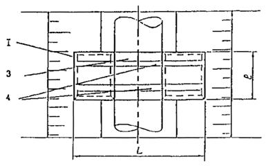
Рис. 3. Схема конструкции полимерно-контейнерного балластирующего устройства:
1 - рамка жесткости; 2 - емкость из мягкой ткани; 3 - нижняя грузовая лента; 4 - верхняя грузовая лента; 5 - противоразмывная перегородка
|
Диаметр трубопровода, мм |
Габаритные размеры ПКБУ, мм |
Объем грунта в комплекте, куб.м |
||
|
L |
Н |
I |
||
|
1420 |
4200 |
1450 |
1600 |
8,0 |
|
1220 |
3800 |
1250 |
1600 |
6,0 |
|
1020 |
3100 |
1100 |
1600 |
3,5 |
|
820 |
3000 |
850 |
1600 |
3,1 |
|
720 |
2900 |
800 |
1600 |
3,0 |
Рис. 4. Контейнерный утяжелитель типа КГ на газопроводе
|
Марка контейнера |
Диаметр газопровода, (d тр.) |
Материал контейнера |
Емкость м3/к-т |
Вес в воздухе, т/к-т |
Вес в воде, т/к-т |
Размеры в плане на газопроводе, (I ´ b), м |
Примечания |
|
КГ-1400 |
1420 |
Технич. ткань |
3,5±0,1 |
5,3±0,3 |
2,8±0,2 |
1,6´3,2 |
ТУ 102-588-91 |
|
КГ-1200 |
1220 |
-"- |
3,5±0,1 |
5,3±0,3 |
2,8±0,2 |
1,6´2,8 |
ТУ 102-588-91 |
|
КТ-1000 |
1020 |
-"- |
3,5±0,3 |
5,3±0,3 |
2,8±0,2 |
1,6´2,6 |
ТУ 102-588-91 |
|
КТ-800Т |
630-820 |
НСМ |
2,4±0,1 |
4,0±0,2 |
2,0±0,1 |
1,6´2,1-2,3 |
ТУ 102-592-91 |
|
КТ-500Т |
377-530 |
НСМ |
1,2±0,2 |
1,8±0,3 |
1,0±0,1 |
1,2´1,3 |
ТУ 102-591-91 |
|
КТ-ЗООТ |
219-325 |
НСМ |
0,5±0,2 |
0,8±0,1 |
0,7±0,1 |
1,0´1,1 |
ТУ 102-589-91 |
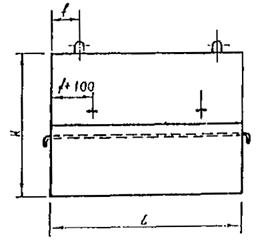
Рис. 5. Железобетонный утяжелитель охватывающего типа УБО
|
Марка груза |
Диаметр газопровода, мм |
Габаритные размеры, мм |
Объем груза, куб.м |
Масса груза, т при gs=2,3 т/куб, м |
Максимальная величина балластирующей способности груза, тc |
Код ОКП |
|||||||||
|
Н |
h |
L |
В |
а |
b |
с |
А |
f |
d |
||||||
|
УБО-1420 |
1420 |
1600 |
800 |
1200 |
600 |
265 |
150 |
680 |
600 |
200 |
200 |
1,89 |
4,347 |
2,447 |
5853210587 |
|
УБО-1220 |
1220 |
1400 |
700 |
1350 |
600 |
265 |
150 |
600 |
550 |
200 |
200 |
1,85 |
4,253 |
2,407 |
5853210588 |
|
УБО-1020 |
1020 |
1100 |
500 |
1500 |
550 |
240 |
150 |
435 |
450 |
200 |
200 |
1,47 |
3,378 |
1,903 |
5853210589 |
|
УБО-530 |
530 |
700 |
400 |
1000 |
300 |
137 |
100 |
310 |
250 |
250 |
120 |
0,36 |
0,834 |
0,471 |
5853210592 |
2.3. Утяжелители текстильные контейнерного типа (КГ) изготавливают из полимерных материалов в соответствии с ТУ (табл. 3) и регламентом изготовления. Утяжелители представляют собой заполненные минеральным грунтом замкнутые оболочечные конструкции (рис. 4), соединенные между собой неразъемно при изготовлении.
Технические характеристики контейнерных утяжелителей типа КГ приведены в табл. 3.
2.4. Железобетонные утяжелители охватывающего типа УБО изготавливают по ТУ 102-300-81 (с изменениями 1 - 13)
Утяжелители типа УБО (рис. 5) состоят из двух железобетонных блоков, двух металлических, защищенных изоляционным покрытием или мягких, изготовленных из долговечного синтетического материала соединительных поясов по ТУ на утяжелитель УБО или по ТУ 51-02-96. Технические характеристики на утяжелитель приведены в табл. 4.
2.5. Железобетонные утяжелители охватывающего типа УБО-М (рис. 6) изготавливают по ТУ 51-04-97. Технические характеристики утяжелителя приведены в табл. 5.
Отличительной особенностью утяжелителя УБО-М является наличие в каждом из железобетонных блоков глухого паза, в котором размещен стержень для навески соединительных поясов. Отсутствие за пределами блока крюков для навески соединительных поясов повышает надежность конструкции. Мягкие соединительные пояса изготавливают по ТУ 51-02-96.
2.6. Железобетонные утяжелители клиновидного типа 1-УБКМ (рис. 7) изготавливают по ТУ 102-426-86. Технические характеристики на утяжелитель приведены в табл. 6.
2.7. Железобетонные утяжелители типа УБГ* (рис. 8) изготавливают в соответствии с требованиями ТУ на их изготовление. Технические характеристики утяжелителя приведены в табл. 7.
* Примечание: Конструкции, обозначенные звездочкой, могут быть использованы для массового применения после регистрации ТУ на их изготовление в установленном порядке.
Утяжелитель типа УБГ представляет собой корытообразную, заполняемую минеральным грунтом, емкость и состоит из трех шарнирно-соединенных между собой прямоугольных плит, боковые из которых имеют сквозные отверстия или анкерующие элементы, через которые проходят или к которым крепятся два мягких соединительных пояса, изготавливаемых по ТУ 54-02-96.
2.8. Железобетонные утяжелители типа УБТ (рис. 9) изготавливают в соответствии с требованиями ТУ на их изготовление. Технические характеристики утяжелителя приведены в табл. 8.
Заполняемый минеральным грунтом утяжелитель УБТ состоит из двух трехсекционных блоков, каждый из которых состоит из продольной стенки и двух, опирающихся на трубопровод, поперечно размещенных диафрагм, шарнирно-соединенных с продольной стенкой.
2.9. Винтовые анкерные устройства типа ВАУ-1 (рис. 10) изготавливают по ТУ 102-164-89. ВАУ-1 состоит из двух винтовых лопастей, двух анкерных тяг с наконечниками и силового пояса.
2.10. Винтовые анкерные устройства ВАУ-М* (рис. 11) с измененной режущей кромкой заходной части винтовой лопасти, обеспечивающие сокращение величины крутящего момента при их завинчивании в грунт, изготавливают в соответствии с требованиями ТУ на их изготовление.
Рис. 6. Общий вид утяжелителя УБО-М:
1 - ж/б блок утяжелителя; 2 - соединительный пояс; 3 - монтажная петля
|
Марка груза |
Диаметр газопровода, мм |
Габаритные размеры, мм |
Объем груза, м3 |
Масса груза, т |
Максимальная величина балластирующей способности груза, тн |
Код ОКП |
||||||
|
Н |
h |
L |
В |
К |
b |
с |
||||||
|
УБО-М-1420 |
1420 |
1600 |
800 |
1200 |
600 |
600 |
450 |
680 |
1,89 |
4,347 |
2,447 |
5853210587 |
|
УБО-М-1220 |
1220 |
1400 |
700 |
1350 |
600 |
550 |
450 |
600 |
1,85 |
4,253 |
2,407 |
5853210588 |
|
УБО-М-1020 |
1020 |
1100 |
500 |
1500 |
550 |
450 |
400 |
435 |
1,47 |
3,378 |
1,903 |
5853210589 |
|
УБО-М-820 |
820 |
1100 |
500 |
1500 |
550 |
350 |
400 |
435 |
1,47 |
3,378 |
1,903 |
5853210590 |
|
УБО-М-720 |
720 |
1100 |
500 |
1500 |
550 |
300 |
400 |
435 |
1,47 |
3,378 |
1,903 |
5853210591 |
|
УБО-М-530 |
530 |
700 |
400 |
1000 |
400 |
230 |
250 |
310 |
0,36 |
0,834 |
0,471 |
5853210592 |
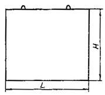
Рис. 7. Железобетонный утяжелитель типа 1-УБКМ
|
Диаметр газопровода, мм |
Марка утяжелителя |
Габаритные размеры утяжелителя, мм |
Объем бетона, куб.м |
Масса утяжелителя, кг |
||||
|
L |
Н |
В |
R |
b |
||||
|
1420 |
1-УБКМ-1420-10 |
1000 |
1760 |
2400 |
1100 |
400 |
2,51 |
6020 |
|
1220 |
1-УБКМ-1220-9 |
900 |
1570 |
2000 |
1100 |
290 |
1,69 |
4060 |
|
1020 |
1-УБКМ-1020-9 |
900 |
1370 |
1840 |
1100 |
300 |
1,49 |
3580 |
|
820 |
1-УБКМ-820-9 |
900 |
1120 |
1600 |
1000 |
300 |
1,12 |
2690 |
|
720 |
1-УБКМ-720-9 |
900 |
1030 |
1500 |
800 |
310 |
1,03 |
2470 |
|
630 |
1-УБКМ-720-9 |
900 |
1030 |
1500 |
800 |
310 |
1,03 |
2470 |
|
530 |
1-УБКМ-529-9 |
900 |
760 |
1300 |
800 |
310 |
0,69 |
1660 |
|
478 |
1-УБКМ-529-9 |
900 |
760 |
1300 |
800 |
310 |
0,69 |
1660 |
|
426 |
1-УБКМ-426-9 |
900 |
690 |
1100 |
800 |
250 |
0,55 |
1320 |
|
377 |
1-УБКМ-426-9 |
900 |
690 |
1100 |
800 |
250 |
0,55 |
1320 |
Примечание. Масса утяжелителя определена для плотности бетона 2400 кг/куб.м
Рис. 8. Железобетонный утяжелитель типа УБГ:
1 - газопровод; 2 - приямок в траншее для установки утяжелителя; 3 - шарнирно-соединенные плиты; 4 - силовой соединительный пояс; 5 - дно траншеи
|
Марка утяжелителя |
Диаметр трубы, мм |
Масса утяжелителя в воздухе, кг |
Объем бетона на утяжелитель, куб.м |
Расход стали на утяжелитель, кг |
|
УБГ-1420 |
1420 |
5610 |
2,43 |
142 |
|
УБГ-1220 |
1220 |
5610 |
2,43 |
142 |
|
УБГ-1020 |
1020 |
3450 |
1,50 |
91 |
Примечание. Габариты плиты для утяжелителей типа УБГ-1420 и УБГ-1220 составляют 3000´1500´180 мм, а для УБГ-1020 соответственно 3000´1500´140 мм
Рис. 9. Железобетонный утяжелитель типа УБТ:
1 - газопровод; 2 - продольная плита; 3 - поперечные диафрагмы; 4 - узел крепления поперечных диафрагм после установки блоков утяжелителя на газопровод
|
Марка утяжелителя |
Диаметр трубы, мм |
Масса утяжелителя в воздухе, кг |
Объем бетона на утяжелитель, куб.м |
Расход стали на утяжелитель, кг |
|
УБТ-1420 |
1420 |
4430 |
1,92 |
280 |
|
УБТ-1220 |
1220 |
4260 |
1,86 |
278 |
|
УБТ-1020 |
1020 |
3690 |
1,60 |
255 |
Примечание. Длина продольной стенки утяжелителя - 2000 мм, высота -1800 мм (для балластировки газопроводов диаметром 1420 и 1220 мм) и соответственно 1500 мм для балластировки газопроводов диаметром 1020 мм.
Рис. 10. Винтовое анкерное устройство ВАУ-1:
1 - газопровод; 2 - тяга анкера с наконечником; 3 - винтовая лопасть; 4 - силовой соединительный пояс
Рис. 11. Винтовое анкерное устройство ВАУ-М:
1 - газопровод; 2 - тяга анкера с наконечником; 3 - винтовая лопасть; 4 - силовой соединительный пояс
Рис. 12. Дисковое вмораживаемое анкерное устройство ДАУ-02К:
1 - газопровод; 2 - тяга; 3 - диск; 4 - ограничитель усилий; 5 - силовой соединительный пояс
Рис. 13. Винтовое вмораживаемое анкерное устройство ВАУ-В:
1 - газопровод; 2 - тяга с наконечником; 3 - винтовая лопасть на втулке; 4 - втулка (разделительная); 5 - ограничитель усилий; 6 - силовой соединительный пояс.
2.11. Вмораживаемые анкерные устройства дискового типа изготавливают по ТУ 102-455-88. Анкерное устройство дискового типа (рис. 12) состоит из двух тяг с круглыми дисками, расположенными на расчетном расстоянии друг от друга, двух ограничителей усилий и силового пояса. Ограничители усилий в анкерном устройстве применяются в случае закрепления газопроводов, прокладываемых в пучинистых грунтах.
2.12. Винтовые вмораживаемые анкерные устройства ВАУ-В* (рис. 13) изготавливают в соответствии с требованиями ТУ на их изготовление. Анкерное устройство состоит из двух или четырех приваренных к втулкам винтовых лопастей, двух тяг с наконечниками и силового соединительного пояса. Кроме того, составными элементами ВАУ-В являются два ограничителя усилий (при установке их в пучинистых грунтах) и две втулки, одеваемые на тяги поверх нижних винтовых лопастей.
2.13. Для защиты изоляционного покрытия газопровода от действия железобетонных утяжелителей, металлических соединительных поясов, а также анкерных устройств должны быть использованы футеровочные маты, изготовленные в соответствии с требованиями ТУ 51-05-97.
2.14. Для балластировки газопроводов минеральными грунтами в сочетании с полотнищами из нетканого синтетического материала (НСМ) в зависимости от характера грунтов и категории местности могут быть использованы различные конструктивные схемы:
- Схема 1 (рис. 14), в которой НСМ укладывают в траншею на уложенный в проектное положение газопровод . При этом, концы полотнищ размещают на берме траншеи, закрепляя их металлическими штырями, после чего траншея засыпается грунтом.
- Схема 2 (рис. 15), в которой НСМ укладывается в траншею на уложенный в проектное положение газопровод и после частичной ее засыпки замыкается над газопроводом, образуя над ним замкнутый контур.
- Схема 3 (рис. 16) представляет собой комбинированный способ балластировки газопроводов с использованием железобетонных утяжелителей охватывающего типа или анкерных устройств.
Технические характеристики утяжелителей типа ПКУ
|
Наименование изделия |
Диаметр трубы, мм |
Размеры, м |
Объем, м3 |
Масса, кг |
Кол-во силовых поясов, шт |
||
|
Длина |
Ширина |
Высота |
|||||
|
ПКУ |
1420 |
2,3 |
1,0 |
1,65 |
1,83 |
48 |
2 |
|
ПКУ (м) |
1220 |
2,1 |
1,0 |
1,45 |
1,6 |
42 |
2 |
|
1020 |
1,7 |
0,8 |
1,25 |
0,86 |
29 |
2 |
|
|
820 |
1,5 |
0,8 |
1,05 |
0,71 |
24 |
1 |
|
|
720 |
1,4 |
0,8 |
0,95 |
0,65 |
21 |
1 |
|
|
530 |
1,0 |
0,6 |
0,7 |
0,25 |
12 |
1 |
|
|
426 |
0,9 |
0,6 |
0,6 |
0,2 |
10 |
1 |
|
|
325 |
0,8 |
0,6 |
0,5 |
0,18 |
9,5 |
1 |
|
Рис. 14. Способ балластировки газопроводов минеральным грунтом засыпки с использованием полотнищ из НСМ (для песчаных грунтов) - схема 1:
1 - газопровод; 2 - полотнище из НСМ; 3- металлический штырь; 4 - грунт засыпки
Рис. 15. Способ балластировки газопроводов минеральным грунтом засыпки с использованием полотнищ из НСМ (для суглинистых грунтов и сельхозугодий) - схема 2:
1 - грунт засыпки; 2 - полотнище из НСМ; 3 -газопровод
Рис. 16. Комбинированный способ балластировки газопроводов с использованием минеральных грунтов засыпки в сочетании с НСМ, утяжелителями различных конструкций или анкерными устройствами - схема 3:
1 - газопровод; 2 - траншея; 3 полотнище из НСМ; 4 - грунт засыпки; 5 - утяжелитель типа УБО
Рис. 17. Заполняемый грунтом полимерконтейнер ПКР-Ф:
1 - газопровод; 2 - полимерконтейнер; 3 - грунт засыпки
Рис. 18. Полимерконтейнер ПКУ
1. Криволинейный свод; 2. Силовой пояс; 3. Боковая стенка; 4. Лобовой участок; 5. Карман для ПКУ; 6. Карман для ПКУ (м)
2.15. Полимерконтейнеры ПКР-Ф* (рис. 17), формируемые непосредственно в траншее над уложенным в проектное положение газопроводе изготавливают в соответствии с требованиями ТУ на их изготовление. После заполнения грунтом полимерконтейнер представляет собой утяжелитель седловидного типа.
2.16. Заполняемые грунтом полимерконтейнеры ПКУ (рис. 18) изготавливают по ТУ 2296-001-00158631-97. Они представляют собой емкость в виде П - образного утяжелителя, стенки которого выполнены из НСМ, пропитанного твердеющей полимерной смолой, придающей полости ПКУ необходимую прочность и жесткость. Верхний силовой пояс сохраняет форму емкости при ее засыпке грунтом. ПКУ изготавливают в двух модификациях: с жесткими и гибкими (ПКУм) карманами. Модификацией ПКУ является также полимерконтейнер СПУ* (складывающийся). Основные параметры полимерконтейнера представлены в табл. 9.
3.1. Выбор конструкции или способа балластировки (закрепления) газопровода проводится проектной организацией с учетом следующих основных факторов:
- категории местности,
- характера и типа грунтов,
- уровня грунтовых вод,
- рельефа местности,
- схем прокладки, наличия углов поворотов, кривых искусственного гнутья,
- методов и сезонов производства строительно-монтажных работ,
- условий эксплуатации,
- технико-экономической целесообразности их применения.
3.2. ПКБУ следует применять для балластировки газопроводов, прокладываемых на обводненных участках трассы. При заполнении контейнеров минеральным грунтом из отвала или привозным минеральным грунтом эти устройства возможно применять и на болотах с мощностью торфяной залежи не более глубины траншеи.
3.3. Балластировку газопроводов утяжелителями контейнерного типа (КГ) следует проводить на участках прогнозируемого обводнения и на обводненных (заболоченных) территориях. На газопроводах диаметрами до 1020 мм возможно использование КГ на болотах с мощностью торфяной залежи не более глубины траншеи.
3.4. Железобетонные утяжелители типа УБО и УБО-М (охватывающего типа) следует применять для балластировки газопроводов на всех категориях местности, а также углах поворота и участках выхода трубопровода на дневную поверхность.
3.5. Опирающиеся на газопровод железобетонные утяжелители клиновидного типа 1-УБКМ целесообразно использовать для балластировки газопроводов с заводской изоляцией на обводненных и заболоченных территориях, в вечномерзлых грунтах, а также на болотах с мощностью торфяной залежи, не превышающей глубины траншеи.
3.6. Железобетонные утяжелители типа УБГ и УБТ следует применять для балластировки газопроводов в обводненной и заболоченной местности, в вечномерзлых грунтах, а также на переходах через болота с мощностью торфяной залежи, не превышающей глубины траншеи (при условии заполнения их минеральным грунтом).
3.7. Закрепление газопроводов винтовыми анкерными устройствами ВАУ-1 и ВАУ-М может осуществляться в условиях обводненной и заболоченной местности, а также на переходах через болота с мощностью торфяной залежи, не превышающей глубины траншеи. При этом, подстилающие болота грунты должны обеспечивать надежную работу анкеров.
3.8. Закрепление газопроводов при помощи вмораживаемых анкерных устройств типа ДАУ и ВАУ - В рекомендуется применять на участках вечной мерзлоты (преимущественно в низкотемпературных, твердомерзлых песчаных и глинистых, устойчивых в реологическом отношении грунтах), включая болота с мощностью торфа не более глубины траншеи, при условии, что несущие элементы вмораживаемых анкеров должны находиться в вечномерзлом грунте в течение всего срока их эксплуатации.
Длина части вмораживаемого анкера, взаимодействующая с вечномерзлым грунтом в процессе эксплуатации газопровода должна быть не менее двух метров (СНиП 2.02.04-87).
Конструкция ограничителя усилий должна обеспечивать работоспособность анкера в течение всего периода эксплуатации газопровода на переходах через болота и в течение 3 - 7 лет на участках, сложенных минеральными грунтами.
3.9. Балластировку газопроводов минеральными грунтами в сочетании с полотнищами из НСМ следует осуществлять:
- по схеме 1, в обводненной местности и участках перспективного обводнения, сложенных суглинистыми грунтами;
- по схеме 2, в тех же условиях при наличии песчаных грунтов, включая вечномерзлых;
- по схеме 3, на переходах через болота с мощностью торфяной залежи, не превышающей глубины траншеи.
Балластировка газопроводов минеральными грунтами в сочетании с полотнищами из НСМ допускается на уклонах микрорельефа более 3° при условии выполнения противоэрозионных мероприятий, в том числе установки противоэрозионных ловушек для грунта (рис. 19).
3.10. Заполняемые минеральными грунтами полимерконтейнеры ПКР-Ф, ПКУ и СПУ следует применять для балластировки газопроводов, прокладываемых в условиях обводненной и заболоченной местности, на участках прогнозируемого обводнения, а также на переходах через болота с мощностью торфа не более глубины траншеи и в песчаных вечномерзлых грунтах.
3.11. Балластировка и закрепление газопроводов, прокладываемых на переходах через глубокие болота и малые водные преграды должны осуществляться с помощью железобетонных утяжелителей типа УТК (при сплаве или протаскивании трубопровода), или утяжелителей охватывающего типа УБО-М (при укладке трубопровода с бермы траншеи).
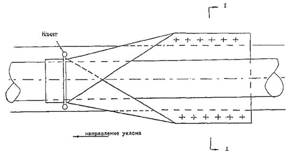
Рис. 19. Противоэрозионная "ловушка" для грунта
3.12. При укладке газопроводов на заболоченных, размываемых поймах рек методами сплава или протаскивания необходимо использовать утяжелители типа УТК.
При укладке газопроводов с бермы траншеи на заболоченных (при мощности залежи более глубины траншеи) неразмываемых поймах рек допускается применение для их балластировки утяжелителей типа УБО-М.
3.13. На неразмываемых поймах рек, сложенных минеральными или торфяными грунтами, мощность которых не превышает глубину траншеи, устойчивость положения газопроводов обеспечивается с помощью заполненных грунтом полимерконтейнерных устройств типа ПКБУ, КГ, ПКР-Ф, ПКУ и СПУ, минеральными грунтами с использованием НСМ, железобетонных утяжелителей типа УБО, УБО-М, УБГ и УБТ, а также анкерных устройств типа ВАУ-1 и ВАУ-М или минеральными грунтами засыпки (при прокладке газопроводов диаметрами не более 529 мм).
3.14. Для обеспечения устойчивости положения газопроводов диаметрами до 529 мм (включительно), прокладываемых в различных условиях, целесообразно преимущественно использовать:
- минеральные грунты засыпки,
- комбинированные способы балластировки грунтом с использованием полотнищ из НСМ,
- заполненные грунтом полимерконтейнерные устройства ПКБУ, КГ, ПКР-Ф, ПКУ и СПУ, а также винтовых анкеров с диаметрами лопастей 100 и 150 мм.
3.15. Использование для балластировки газопроводов малых диаметров (не более 529 мм) железобетонных утяжелителей типа УБО-М и УБО допускается на размываемых участках трасс, включая поймы рек, а также на переходах через болота.
3.16. При значительных продольных перемещениях газопровода, возникающих в процессе его эксплуатации, проектной организацией должно быть предусмотрено выполнение комплекса мероприятий, обеспечивающих сохранность изоляционного покрытия газопровода и балластирующих конструкций.
4.1.1. Балластировка или закрепление газопровода при подземной прокладке производится с целью обеспечения устойчивости его положения на проектных отметках в заполненной водой траншее как в процессе строительства, так и в течение всего периода его эксплуатации.
4.1.2. Настоящие методы расчета распространяются на магистральные и промысловые газопроводы, а также отводы от них, прокладываемые в обводненной и заболоченной местности, на переходах через болота различных типов, в вечномерзлых грунтах, а также на переходах через малые водные преграды с зеркалом воды в межень не более 30 м и глубине до 1,5 м.
4.1.3. Устойчивость положения газопроводов, прокладываемых на обводненных участках трассы, следует проверять для отдельных участков в зависимости от конкретных условий строительства и эксплуатации.
4.1.4. Используемые в расчетах физико-механические и теплофизические характеристики грунтов определяются на основании результатов изысканий и прогнозирования изменения свойств грунтов в процессе строительства и эксплуатации.
4.1.5. Устойчивость положения участка газопровода следует проверять по условию:
Qakm 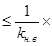
где Qakm - суммарная расчетная нагрузка на участок газопровода, действующая вверх;
Qnac - суммарная расчетная нагрузка, действующая вниз;
kн.в - коэффициент надежности устойчивости положения газопровода (против всплытия).
4.1.6. Суммарная расчетная нагрузка Qakm должна включать в себя упругий отпор при прокладке газопровода свободным изгибом.
4.1.7. Суммарная расчетная нагрузка Qnac должна включать в себя собственный вес газопровода.
4.1.8. Коэффициент надежности устойчивости положения газопровода против всплытия (kн.в) принимается в зависимости от категории местности равным ~1,05 для газопроводов, прокладываемых в обводненной и заболоченной местности, на болотах, в вечномерзлых грунтах; и на переходах через малые водные преграды, и 1,10 - для газопроводов, сооружаемых через реки шириной до 200 м по среднему меженному уровню, включая прибрежные участки в границах производства подводно-технических работ.
4.1.9. Основные параметры устойчивости положения газопроводов, определяемые в соответствии с данной методикой, базируются на расчете или весовых характеристик балластирующих конструкций, или несущей способности системы "анкерное устройство - грунт". В методике считается, что все применяемые конструкции балластирующих и закрепляющих устройств безусловно удовлетворяют условиям собственной прочности и жесткости.
4.1.10. В данной методике не рассматриваются вопросы прочности, деформативности и общей устойчивости участков газопроводов, подлежащих балластировке или закреплению. Необходимо отметить, что при поверочных расчетах сложных участков газопроводов (как многократно статически неопределимых систем) на прочность и устойчивость требуется учитывать взаимодействие забалластированного газопровода с грунтом и податливость анкерных устройств для закрепляемого анкерами трубопровода. При этом, возможны случаи, когда интенсивность балластировки (для забалластированного газопровода) и шаг анкеров (для газопровода, закрепленного анкерами), определенные в соответствии с настоящими положениями, могут оказаться недостаточными. В подобных случаях окончательное решение по балластировке или закреплению газопровода должно приниматься проектной организацией в соответствии с результатами поверочных расчетов.
4.1.11. Все вычисления, выполняемые в соответствии с настоящей методикой, следует производить в единой системе единиц СИ (система интернациональная). Следует использовать основные единицы системы СИ: метр, килограмм, секунду, а производные единицы должны быть построены на указанных основных единицах. Такой подход исключает необходимость введения в используемые формулы размерных коэффициентов, а также потребность в указании размерностей в применяемых условных обозначениях.
4.2.1.
При равномерной по длине балластировке одиночными утяжелителями или сплошным
обетонированием участка газопровода, укладываемого способом свободного изгиба,
величина нормативной интенсивности балластировки - вес на воздухе 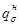
где ns - коэффициент надежности по нагрузке;
qв - расчетная погонная выталкивающая силы воды;
qиз - расчетная интенсивность нагрузки от упругого отпора при свободном изгибе газопровода;
qтр - расчетный погонный собственный вес газопровода;
gs - нормативная плотность материала пригрузки;
gв- плотность воды.
4.2.2. Коэффициент надежности по нагрузке ns принимается равным 0,9 для железобетонных утяжелителей и обетонированных труб.
4.2.3. Расчетная погонная выталкивающая сила воды, действующая на трубопровод, должна определяться по формуле:
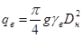
где g - ускорение свободного падения;
gв - плотность воды с учетом растворенных в ней солей;
Dн - наружный диаметр газопровода с учетом изоляционного покрытия и футеровки.
При проектировании газопроводов на участках переходов, сложенных грунтами, которые могут перейти в жидкопластичное состояние, вместо плотности воды следует принимать плотность разжиженного грунта, определяемую по данным изысканий.
4.2.4. Расчетную интенсивность нагрузки от упругого отпора при свободном изгибе газопровода следует определять по формулам:
· для выпуклых кривых
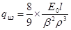
· для вогнутых кривых
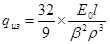
где Е0 - модуль упругости стали;
l - момент инерции сечения газопровода;
b - угол поворота оси газопровода;
r - минимальный радиус упругого изгиба оси газопровода.
4.2.5. Расчетный погонный собственный вес газопровода определяется по формуле:
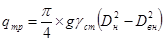
где gсm - плотность стали;
Dн - наружный диаметр сечения трубы;
Dвн = Dн - 2d - внутренний диаметр сечения трубы;
d - номинальная толщина стенки трубы;
Dвн - внутренний диаметр сечения газопровода.
4.2.6. При сплошном обетонировании газопровода требуемую минимальную толщину слоя бетона hs следует определять по формуле:
где - нормативная интенсивность балластировки, определенная ранее по формуле (2.1);
gs - нормативная плотность бетона;
Dн - наружный диаметр газопровода с учетом слоя изоляции.
Полученную по формуле (2.6) толщину слоя бетона следует округлить в большую сторону с точностью до 0,005 м.
4.2.7. При балластировке газопровода отдельными утяжелителями шаг утяжелителя L при их равномерной расстановке (расстояние между осями утяжелителей) следует определять по формуле:
L= 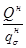
где Qн - нормативный вес одного утяжелителя;
- нормативная интенсивность балластировки, определенная ранее по формуле (2.1)
4.2.8. Балластирующая способность минеральных грунтов засыпки над утяжелителями УБО-М и УБО, установленными на газопроводе групповым способом, а также над утяжелителями типа УБГ и УБТ учитывается исходя из объема грунта (во взвешенном состоянии) непосредственно над утяжелителем в пределах его проекции на дневные отметки. При этом, в зависимости от физико-механических свойств грунтов засыпки и строительного сезона производства линейных работ проектной организацией вводятся понижающие коэффициенты от 0,4 до 0,9 и осуществляются мероприятия, обеспечивающие защиту грунта засыпки от размыва.
4.3.1. В талых грунтах закрепление газопроводов возможно винтовыми анкерами и свайными анкерами раскрывающегося типа.
4.3.2. Расчетную несущую способность одного анкерного устройства Вd следует определять по формуле:
где z - количество анкеров в одном анкерном устройстве;
mа - коэффициент условий работы анкерного устройства;
Ра - расчетная несущая способность анкера.
4.3.3. Коэффициент условий работы анкерного устройства mа зависит от количества анкеров z и соотношения между диаметром газопровода Dн и максимальным линейным размером габарита проекции одного анкера на горизонтальную плоскость Dанк:
1) При z= 1
или
z = 2 и (Dн/Dанк) > 3: (3.2)
mа = 1;
2) При z ³ 2 и 1 £ (Dн/Dанк) £ 3:
mа 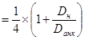
При двух лопастях в анкерах раскрывающегося типа в качестве Dанк следует принимать максимальный линейный размер большей по диаметру лопасти анкера.
4.3.4. Расчетная несущая способность анкера Ра зависит от несущей способности грунта основания и определяется из условия:
где Fd - несущая способность анкера;
gk- коэффициент надежности анкера.
4.3.5. Несущая способность анкера Fd определяется расчетом или по результатам полевых испытаний статической нагрузкой согласно СНиП 2.02.03-85 "Свайные фундаменты".
4.3.6. Коэффициент надежности анкера у принимается равным:
1,40 - если несущая способность анкера определена расчетом;
1,25 - если несущая способность анкера определена по результатам полевых испытаний статической нагрузкой.
4.3.7. Несущая способность анкера, определяемая расчетом, зависит от глубины погружения анкера.
В случае, если глубина заложения верхней лопасти анкера от уровня дна траншеи составляет от 6 до 8 ее диаметров, то несущую способность анкера следует определять по формуле:
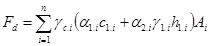
где i - номер лопасти анкера;
n - число лопастей по высоте анкера;
gс.i - коэффициент условий борьбы i-ой лопасти анкера;
a1.i, a2.i - безразмерные коэффициенты;
c1.i - расчетное удельное сцепление пылевато-глинистого или параметр линейности песчаного грунта в рабочей зоне i-ой лопасти анкера;
g1.i - осредненное расчетное значение удельного веса грунта;
h1.i - глубина залегания i-ой лопасти анкера от дна траншеи;
Аi - площадь i-ой лопасти анкера.
4.3.8. Число лопастей анкера принимается равным:
· n = 1 - для винтовых анкеров;
· n = 2 - для раскрывающихся анкеров.
4.3.9. Коэффициент условий работы анкера gс.i принимается, в зависимости от грунта равным:
Глины и суглинки:
· твердые, полутвердые, полупластичные и мягкопластичные 0,7
· текучепластичные 0,6
Пески и супеси:
· пески маловлажные и супеси твердые 0,7
· пески влажные и супеси пластичные 0,6
· пески водонасыщенные и супеси текучие 0,5
4.3.10. Безразмерные коэффициенты a1.i, a2.i зависят от расчетного угла внутреннего трения грунта j1.i в рабочей зоне (под рабочей зоной понимается прилегающий к лопасти слой грунта толщиной, равной Dанк) в соответствии с табл.10.
|
j1.i |
13 |
15 |
16 |
18 |
20 |
22 |
24 |
26 |
28 |
30 |
32 |
34 |
|
a1.i |
7,8 |
8,4 |
9,4 |
10,1 |
12,1 |
15,0 |
18,0 |
23,1 |
29,5 |
38,0 |
48,4 |
64,9 |
|
a2.i |
2,8 |
3,3 |
3,8 |
4,5 |
5,5 |
7,0 |
9,2 |
12,3 |
16,6 |
22,5 |
31,0 |
44,4 |
Примечания:
· характеристики грунтов, указанные в табл. 10, относятся к грунтам, залегающим над лопастью анкера;
· расчетные значения угла внутреннего трения и сцепления грунта основания следует определять по указаниям СНиП 2.02.01-83 "Основания зданий и сооружений";
· при промежуточных значениях угла внутреннего трения грунта, не указанных в табл. 10, значения коэффициентов a1.i, a2.i следует определять линейной интерполяцией.
4.3.11. Усредненное расчетное значение удельного веса грунта g1.i находится с учетом взвешивающего действия воды по формуле:
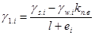
где gs.i - удельный вес частиц грунта;
gw.i - удельный вес воды;
еi - коэффициент пористости грунта.
4.3.12. При глубинах погружения анкера, меньше указанных в п. 4.3.7, следует применять только однолопастные анкеры. В этом случае несущую способность анкера необходимо определять по формуле:
где Vbf - объем тела выпирания в форме усеченной пирамиды;
Аbf - площадь боковой поверхности усеченной пирамиды.
4.3.13. Для анкеров с круглой лопастью входящие в формулу (3.7) составляющие следует определять по формулам:
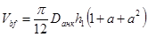
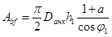
где 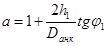
4.3.14. Расстояние между осями анкерных устройств (шаг анкерных устройств) Lа должно удовлетворять условию:
Lа 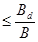
где Вd - расчетная несущая способность анкерного устройства;
В - требуемое расчетное усилие анкерного устройства, приходящееся на единицу длины трубопровода и определяемое по формуле:
В = kн.в + qиз - qтр, (3.11)
в которой все условные обозначения указаны в п. 4.2.1.
4.4.1. Приведенная в данном разделе методика определения несущей способности дисковых и винтовых вмораживаемых анкеров не распространяется на анкеры указанных конструкций, находящиеся в грунтах с засоленностью более 0,1%, в мерзлых грунтах с льдистостью более 0,4 и в биогенных грунтах.
4.4.2. Расчетная несущая способность анкерного устройства, состоящего из двух вмораживаемых дисковых и винтовых анкеров, определяется по формуле (3.1), в которой следует принять:
Z=2;
mа=1,0,
а расчетная несущая способность анкера определяется по формуле (3.4). Значения коэффициента надежности анкера в формуле (3.4) следует принимать в соответствии с п. 3.6.
4.4.3. Несущую способность вмораживаемого дискового и винтового анкера Fd следует определять расчетом или на основании результатов полевых испытаний статической нагрузкой.
4.4.4. При определении расчетом несущей способности дискового и винтового анкера следует пользоваться формулой:
где gс - коэффициент условий работы анкера, принимаемый равным 1,2;
i - номер диска (лопасти);
n - число дисков (лопастей);
Ri - расчетное давление i-ого диска (лопасти) на мерзлый грунт или грунтовый раствор;
Ai - площадь i-ого диска или лопасти (за исключением площади сечения стержня);
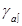
j - номер слоя грунта;
m - число слоев грунта;
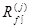
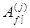
4.4.5. Расчетное давление i-ого диска на мерзлый грунт или грунтовый раствор принимается равным давлению под концом сваи по СНиП 2.02.04-87 «Основания и фундаменты на вечномерзлых грунтах».
4.4.6. Значение Ri определяется в зависимости от грунта (грунтового раствора) и максимальной температуры грунта на уровне диска (лопасти) в соответствии с табл. 11. Температура грунта определяется на основании теплотехнического расчета для наиболее неблагоприятного режима и времени эксплуатации трубопровода.
4.4.7. Расстояние между дисками (лопастями) должно быть не менее 4Dd(л).
4.4.8. Расчетное сопротивление мерзлого грунта или грунтового раствора сдвигу по поверхности смерзания со стержнем принимается для середины каждого j-ого по температуре грунта слоя в соответствии со СНиП 2.02.04-87 «Основания и фундаменты на вечномерзлых грунтах». Значения в зависимости от грунтов и грунтовых растворов приведены в табл. 12 для льдистости грунтов ii £ 0,2, При льдистости мерзлого грунта 0,2 £ ii £ 0,4 приведенные в табл. 12 значения следует дополнительно умножать на коэффициент 0,9.
4.4.9. Коэффициент зависит от поверхности смерзания стержня с грунтом и принимается равным:
· 0,7 - для горячекатаного проката;
· 1,0 - для арматуры периодического профиля.
4.4.10. Несущую способность вмораживаемых анкеров следует также проверять из условия сдвига по боковой поверхности цилиндрического тела по формуле:
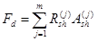
где 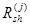
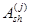
4.4.11. Если раствор, заполняющий скважину, отличается от естественного грунта, то вычисление по формуле (4.2) производится для двух случаев сдвига по боковой поверхности цилиндрического тела с площадью сечения, равной:
· площади диска (сдвиг по раствору);
· площади сечения скважины (сдвиг по грунту - по боковой поверхности скважины) при расчете дисковых анкеров.
При использовании винтовых вмораживаемых анкеров вычисление по формуле (4.2) производится для случая сдвига по боковой поверхности цилиндрического тела с площадью сечения, равной диаметру винтовой лопасти (сдвиг по грунту).
4.4.12. Расчетное сопротивление мерзлого грунта сдвигу в j-ом слое следует принимать при температуре, равной температуре в середине этого слоя (по СНиП 2.02.04-87 «Основания и фундаменты на вечномерзлых грунтах»). Для обычных мерзлых (незасоленных и небиогенных) грунтов значение приведено в табл. 13.
|
Пористость ii, Грунт |
Глубина погружения диска, м |
Ri (МПа) при температуре грунта, °С |
|||||||||||
|
-0,3 |
-0,5 |
-1,0 |
-1,5 |
-2,0 |
-2,5 |
-3,0 |
-3,5 |
-4 |
-6 |
-8 |
-10 |
||
|
ii < 0,2 |
|||||||||||||
|
1. Крупнообломочные |
При любой глубине |
2,5 |
3,0 |
3,5 |
4,0 |
4,3 |
4,5 |
4,8 |
5,3 |
5,8 |
6,3 |
6,8 |
7,3 |
|
2. Пески крупные и |
|||||||||||||
|
средней крупности |
При любой глубине |
1,5 |
1,8 |
2,1 |
2,4 |
2,5 |
2,7 |
2,8 |
3,1 |
3,4 |
3,7 |
4,6 |
5,5 |
|
3. Пески мелкие и |
3-5 |
0,85 |
1,30 |
1,40 |
1,50 |
1,70 |
1,90 |
1,90 |
2,00 |
2,10 |
2,60 |
3,00 |
3,50 |
|
пылеватые |
10 |
1,00 |
1,55 |
1,65 |
1,75 |
2,00 |
2,10 |
2,20 |
2,30 |
2,50 |
3,00 |
3,50 |
4,00 |
|
15 и более |
1,10 |
1,70 |
1,80 |
1,90 |
2,20 |
2,30 |
2,40 |
2,50 |
2,70 |
3,30 |
3,80 |
4,30 |
|
|
4. Супеси |
3-5 |
0,75 |
0,85 |
1,10 |
1,20 |
1,30 |
1,40 |
1,50 |
1,70 |
1,80 |
2,30 |
2,70 |
3,00 |
|
10 |
0,85 |
0,95 |
1,25 |
1,35 |
1,45 |
1,60 |
1,70 |
1,90 |
2,00 |
2,60 |
3,00 |
3,50 |
|
|
15 и более |
0,95 |
1,05 |
1,40 |
1,50 |
1,60 |
1,80 |
1,90 |
2,10 |
2,20 |
2,90 |
3,40 |
3,90 |
|
|
5. Суглинки и глины |
3-5 |
0,65 |
0,75 |
0,85 |
0,95 |
1,10 |
1,20 |
1,30 |
1,40 |
1,50 |
1,80 |
2,30 |
2,80 |
|
10 |
0,80 |
0,85 |
0,95 |
1,10 |
1,25 |
1,35 |
1,45 |
1,60 |
1,70 |
2,00 |
2,60 |
3,00 |
|
|
15 и более |
0,90 |
0,95 |
1,10 |
1,25 |
1,40 |
1,50 |
1,60 |
1,80 |
1,90 |
2,20 |
2,90 |
3,50 |
|
|
0,2 £ ii £ 0,4 |
|||||||||||||
|
6. Все виды грунтов, |
3-5 |
0,40 |
0,50 |
0,60 |
0,75 |
0,85 |
0,95 |
1,00 |
1,10 |
1,15 |
1,50 |
1,60 |
1,70 |
|
указанные в поз. 1-5 |
10 |
0,45 |
0,55 |
0,70 |
0,80 |
0,90 |
1,00 |
1,05 |
1,15 |
1,25 |
1,60 |
1,70 |
1,80 |
|
15 и более |
0,55 |
0,60 |
0,75 |
0,85 |
0,95 |
1,05 |
1,10 |
1,30 |
1,35 |
1,70 |
1,80 |
1,90 |
|
4.4.13. Для вмораживаемых дисковых и винтовых анкеров несущая способность принимается равной меньшему из двух значений, полученных по формулам (4.1) и (4.2).
4.4.14. Расстояние между осями анкерных устройств для вмораживаемых анкеров должно удовлетворять условиям п. 3.14.
|
Грунты |
Rаf (МПа) при температуре грунта, °С |
|||||||||||
|
-0,3 |
-0,5 |
-1,0 |
-1,5 |
-2,0 |
-2,5 |
-3,0 |
-3,5 |
-4 |
-6 |
-8 |
-10 |
|
|
Глинистые |
0,04 |
0,06 |
0,10 |
0,13 |
0,15 |
0,18 |
0,20 |
0,23 |
0,25 |
0,30 |
0,34 |
0,38 |
|
Песчаные |
0,05 |
0,08 |
0,13 |
0,16 |
0,20 |
0,23 |
0,26 |
0,29 |
0,33 |
0,38 |
0,44 |
0,50 |
|
Известково-песчаный раствор |
0,06 |
0,09 |
0,16 |
0,20 |
0,23 |
0,26 |
0,28 |
0,30 |
0,35 |
0,40 |
0,46 |
0,52 |
Примечания:
1. При
промежуточных значениях температуры, не указанных в табл. 12, значение 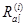
2. Значения 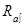
· песка среднезернистого 820 л;
· известкового теста с плотностью 1400 кг/м3 300 л;
· воды 230 л.
Осадка конуса -10-12 см.
При других составах раствора, а также для цементно-песчаного раствора значения следует определять опытным путем.
|
Грунты |
Rsh (МПа) при температуре грунта, °С |
|||||||||||
|
-0,3 |
-0,5 |
-1,0 |
-1,5 |
-2,0 |
-2,5 |
-3,0 |
-3,5 |
-4 |
-6 |
-8 |
-10 |
|
|
Глинистые |
0,05 |
0,08 |
0,12 |
0,15 |
0,17 |
0,19 |
0,21 |
0,23 |
0,25 |
0,30 |
0,34 |
0,38 |
|
Песчаные |
0,08 |
0,12 |
0,17 |
0,21 |
0,24 |
0,27 |
0,30 |
0,32 |
0,34 |
0,42 |
0,48 |
0,54 |
4.5.1. Удерживающую способность (на единицу длины газопровода) грунта обратной засыпки, закрепляемого с помощью НСМ, qгр.НСМ следует определять по формуле:
где nгр- коэффициент надежности по нагрузке (грунту), принимаемый равным 1,2;
gn - коэффициент надежности по назначению, принимаемый равным 1,2;
Dн - наружный диаметр газопровода;
- удельный вес грунта засыпки в естественном (необводненном) состоянии;
gsb - удельный вес грунта во взвешенном состоянии;
hв - расстояние от верха засыпки до уровня воды;
h0 - расстояние от верха засыпки до оси трубопровода;
k - коэффициент, характеризующий призму выпора грунта;
jгр - угол внутреннего трения грунта;
сгр - сцепление грунта.
4.5.2: При использовании для балластировки газопроводов минеральных грунтов, склонных к самоуплотнению и не теряющих при нагружении своих прочностных свойств, их балластирующая способность может определяться по формуле (5.1) с учетом понижающего коэффициента, равного 0,4-0,9, в зависимости от периода (сезона) производства работ и изменения физико-механических свойств грунтов (наличия посторонних включений).
Минимальная глубина траншеи при этом определяется расчетом.
4.5.3. Входящий в формулу (5.1) коэффициент k, характеризующий призму выпора грунта, следует принимать равным:
· k =1 - для газопроводов 1020 мм £ Dн £ 1420 мм;
· k = Dн/1000 (Dн - в мм) - для трубопроводов Dн < 1020 мм.
4.5.4. Удельный вес грунта во взвешенном состоянии следует определять по формуле:
, (5.2)
где gs- удельный вес частиц грунта засыпки;
kн.в - коэффициент устойчивости положения газопровода против всплытия;
с - коэффициент пористости грунта.
4.5.5. Балластировка минеральным грунтом с помощью НСМ будет достаточной в случае, если при непрерывном по длине закреплении с помощью НСМ найденная по (5.1) удерживающая способность обратной засыпки будет удовлетворять условию:
qгр.НСМ ³ kн.вqв + qизг - qmp (5.3)
Условные обозначения в формуле (5.3) аналогичны обозначениям, принятым в п. 2.1.
4.5.6. При применении для балластировки трубопроводов ПКБУ, заполненных минеральным грунтом, расчетную удерживающую способность на единицу длины группы ПКБУ следует определять по формуле:
, (5.4)
где n - количество комплектов ПКБУ в группе;
V - объем одного комплекта;
l - длина группы ПКБУ.
4.5.7. Балластирующая способность минеральных грунтов засыпки над ПКБУ и заполненными грунтом полимерконтейнерами учитывается исходя из объема грунта (во взвешенном состоянии) непосредственно над группой ПКБУ или полимерконтейнеров в пределах ее проекции на дневные отметки, с учетом понижающих коэффициентов, приведенных в п. 4.5.2.
5.1. Организация и технология производства работ по балластировке и закреплению газопроводов должны осуществляться в соответствии с требованиями СНиП III-42-80*, СНиП 3.01.01-85, СП 107-34-96, технологических карт и проектов производства работ.
5.2. Число работающих звеньев для балластировки и закрепления газопроводов следует назначать в зависимости от темпа производства изоляционно-укладочных работ с целью обеспечения поточности строительства линейной части.
5.3. Заполнение полостей ПКБУ минеральным грунтом из отвала и емкостей утяжелителей типа КГ с применением бункерного устройства следует производить сыпучим минеральным грунтом с размерами фракций не более 50 мм, не допускается попадание снега и льда в полости утяжелителей.
ПКБУ собирают в группы по 2 шт. и по 4 шт. на предприятии-изготовителе (при доставке ПКБУ со склада-изготовителя на приобъектный склад стройорганизации автотранспортом) или на полевой базе стройорганизации (при доставке ПКБУ по ж/д раздельно металлическую часть и мягкие конструкции).
Группы из двух штук (для газопроводов диаметром 720 - 1220 мм) и из четырех штук (для d 1420 - после дополнительной сборки из двух групп по две штуки) монтажным краном (допускается применение экскаватора, оснащенного траверсой), навешивают на трубопровод, добиваясь совмещения осей симметрии в плане группы ПКБУ и трубопровода. Центровку ПКБУ на газопроводе и отстроповку траверсы осуществляет рабочий с помощью шеста с крюком с бровки траншеи.
Полости ПКБУ заполняют минеральным (песчаным или глинистым) грунтом из отвала траншеи или привозным грунтом (из карьера), разгружаемым самосвалами в пеноволокушу, перемещаемую экскаватором.
Заполнение ПКБУ грунтом производят до начала осыпания грунта за пределы емкостей ПКБУ.
Утяжелители КГ заполняют грунтом в следующем порядке:
· рукава емкостей одевают на насадки бункера и закрепляют бандажными элементами;
· грузовые элементы контейнера привязывают к металлоконструкциям бункера обрезками упаковочного шнура (тесьмы) с возможностью развязывания узлов под нагрузкой (на бантик).
Перед загрузкой грунтом дно емкостей КГ должно быть выше земли на 30-50 см во избежание образования складок и неравномерной загрузки емкостей. Грунт заполняют экскаватором с промежуточным уплотнением ручными трамбовками. Загрузку производят в две стадии:
· вначале заполняют емкости грунтом, при этом емкость бункерного устройства на одну треть также должна быть заполнена грунтом;
· отсоединяют грузовые элементы (развязывают "бантик"), в результате емкости КГ зависают на рукавах и оставшийся в емкости бункера грунт ссыпается в емкости КГ;
· заполнение грунтом продолжают, сопровождая процесс трамбованием грунта, и заканчивают после заполнения грунтом рукавов;
· размыкают бандажные элементы, снимают рукава емкостей с насадок емкости бункера;
· бункер переставляют на свободное место, освобождая утяжелитель;
· грунт в емкостях распределяют вручную равномерно по площади сечения, рукава емкостей заправляют каждый внутрь между одной из стенок емкости и грунтом. Горловины рукавов перевязывают, связывая между собой пришитые к их основанию два отрезка тесьмы, смежные грузовые элементы емкостей связывают между собой отрезками упаковочного шнура, стягивая этим торцы емкостей. Эту операцию производят при поднятом на 0,5 м от земли утяжелителе, при этом используют два мягких стропа, пропущенных через смежные грузовые элементы и закрепленных на крюке крана. Прочность перевязки из шнура за счет его многократного пропуска через грузовые элементы не должна быть ниже прочности последних (уточняется в инструкции по применению КГ, сопровождающей партию изделий);
· загруженные контейнеры складируют на ровной площадке на поддоне или настиле. С целью предохранения в зимнее время от смерзания грунта в емкостях и (или) их примерзания к земле заполнение КГ грунтом должно производиться непосредственно перед монтажом их на газопровод.
Утяжелители КГ и ПКБУ устанавливаются на газопровод, уложенный на проектные отметки. Допускается установка утяжелителей без водоотлива при уровне воды в траншее не более 0,5 от диаметра балластируемого газопровода.
5.4. В состав работ по балластировке газопроводов железобетонными утяжелителями различных типов входят: доставка, разгрузка утяжелителей и раскладка их в местах, предусмотренных проектом производства работ, подача утяжелителей к месту монтажа, сборка и установка комплектов утяжелителей на уложенный в проектное положение трубопровод.
Установка утяжелителей типа УБО-М и УБО может осуществляться как на уложенный в проектное положение газопровод, так и находящийся на плаву в заполненной водой траншее. При этом погружение газопровода на проектные отметки может производиться с помощью утяжелителей.
5.5. Установку утяжелителей типа 1-УБКм следует производить на газопровод, уложенный на проектные отметки. Допускается установка утяжелителей без водоотлива при уровне воды не более 0,5 от диаметра трубы.
5.6.Отличительной особенностью балластировки газопроводов утяжелителями типа УБГ является то, что их установка в траншею производится до укладки трубопровода, а замыкание над трубопроводом соединительных поясов - после укладки трубопровода на проектные отметки. При этом, замыкание соединительных поясов утяжелителя в траншее без водоотлива допускается при уровне воды не более 0,4 от диаметра трубы.
5.7. Установка блоков утяжелителя типа УБТ на газопровод выполняется последовательно с опиранием каждой продольной стенки блока утяжелителя на откосы траншеи. После установки обоих блоков утяжелителя на газопровод они соединяются между собой за строповочные петли поперечных диафрагм, после чего траншея и утяжелитель заполняются грунтом.
Утяжелители типа УБТ устанавливаются на газопровод, уложенный на проектные отметки. Работы по установке утяжелителей без водоотлива производятся при уровне воды в траншее не более 0,5 от диаметра трубы.
5.8. Монтаж (установка) утяжелителей на уложенный в траншею газопровод выполняется автомобильными кранами или кранами-трубоукладчиками.
Для монтажа утяжелителей типа УБО-М, УБО, УБГ и УБТ применяются специальные траверсы.
5.9. В целях обеспечения максимальной балластирующей способности железобетонных утяжелителей типа УБО-М, УБО, УБГ и УБТ, а также полимерно-контейнерных балластирующих устройств КГ и ПКБУ установку их на газопроводах следует производить преимущественно групповым методом, что обеспечивает возможность использования в качестве дополнительного балласта грунт засыпки траншеи (из отвала или привозной).
5.10. Железобетонные утяжелители типа УТК рекомендуется применять на переходах через болота и обводненные участки при сооружении их методом сплава или протаскивания, преимущественно, в летний период. Установка кольцевых утяжелителей типа УТК на газопровод осуществляется на специальной монтажной площадке у створа перехода непосредственно перед протаскиванием его через болота, водные преграды или заболоченные участки.
Технологический процесс по балластировке газопровода утяжелителями такого типа включает: транспортировку со склада (или полигона ЖБИ) и раскладку полуколец краном-трубоукладчиком на спусковой дорожке. При этом нижний ряд полуколец укладывается по оси спусковой дорожки, а верхний - вдоль нее; укладку плети трубопровода кранами-трубоукладчиками на нижний ряд полуколец; укладку краном - трубоукладчиком верхних полуколец на газопровод; закрепление полуколец между собой с помощью болтовых соединений.
До закрепления установленных утяжелителей на трубе проверяется величина зазора между футеровочными прокладками пояса крепления и полукольцами. В местах, где зазоры составляют более 5 мм, под внутреннюю поверхность полукольца устанавливаются дополнительные прокладки соответствующих размеров.
Монтажные операции по установке УТК на газопровод осуществляются с помощью кранов-трубоукладчиков, входящих в состав бригады, занятой подготовкой к протаскиванию и самим процессом протаскивания плети газопровода.
5.11. В случае применения железобетонных утяжелителей в сильно агрессивных грунтах при их изготовлении должны учитываться повышенные требования к бетону в зависимости от вида и степени засоленности грунтов, а также необходимость вторичной защиты - нанесения покрытий по бетону и металлическим элементам конструкции в соответствии с требованиями СНиП 2.03.11-85.
5.12.Винтовые анкерные устройства типа ВАУ-1 или ВАУ-М устанавливаются (замыкаются) на уложенном в проектное положение газопроводе.
Винтовые анкеры погружаются в грунт установками типа ВАГ в летнее время, как правило, после укладки газопровода в траншею. В зимний период установку анкеров, в основном, осуществляют сразу же после разработки траншеи. При этом выполняется комплекс мероприятий, обеспечивающий сохранность изоляционного покрытия газопровода при укладке последнего в траншею.
Установка винтовых анкеров в грунт (если допущено промерзание траншеи) выполняется после размораживания мерзлых грунтов в основании траншеи или после его механического рыхления.
Контроль за несущей способностью винтовых анкерных устройств осуществляется посредством проведения контрольных испытаний анкеров выдергивающей нагрузкой в соответствии с требованиями ГОСТ 5686-78 на величину, указываемую в проекте. Число испытываемых анкеров определяется требованиями рабочих чертежей в зависимости от конкретных грунтовых условий на участках анкерного закрепления газопровода.
5.13. Погружение вмораживаемых анкеров в вечномерзлые грунты следует производить буроопускным и опускным способами.
Буроопускной способ целесообразно применять в твердомерзлых грунтах при средней температуре по их глубине - 0,5 °С и ниже, а опускной - в песчаных и глинистых грунтах, содержащих не более 15% крупнообломочных включений, при средней температуре по их глубине - 1,5 °С и ниже.
Производство работ по бурению скважин осуществляется буровыми машинами, передвигающимися по спланированному (преимущественно за счет подсыпки грунта) дну траншеи, а также с помощью специального навесного оборудования к гидравлическим одноковшовым экскаваторам, выполняющим работы по бурению скважин с бермы траншеи.
Для разработки скважин парооттаиванием используются передвижные паровые котлы с рабочим давлением 1,0 МПа, производительность которых должна обеспечивать работу целесообразного числа одновременно работающих паровых игл, исходя из расчетного расхода пара до 20-25 кг/час на одну работающую иглу.
Установку вмораживаемых анкеров в грунт следует производить в календарные сроки, обеспечивающие смерзание анкеров с грунтом для обеспечения их расчетной несущей способности.
5.14.Анкерные устройства дискового типа ДАУ устанавливаются в заранее разработанные в вечномерзлом грунте скважины, диаметр которых должен превышать диаметр диска не менее, чем на 3 см, при диаметре диска анкера до 200 мм и на 5 см - при диаметре диска анкера свыше 200 мм.
При этом пространство между стенками скважин и анкерами должно быть заполнено грунтовым (песчаным) раствором, состав и консистенция которого подбирается в соответствии с указаниями действующих строительных норм и правил (СНиП 3.03.01-83).
5.15. Винтовой вмораживаемый анкер устанавливается в заранее разработанную скважину следующим образом: сначала в скважину устанавливается тяга с наконечником, а затем скважина заполняется грунтовым (песчаным) раствором соответствующего состава и консистенции. Сразу же после заполнения скважины раствором, с помощью средств малой механизации или существующих установок для завинчивания анкеров в грунт, одетая на тягу винтовая лопасть завинчивается до упора (наконечника). Затем на тягу устанавливается втулка и вторая винтовая лопасть, которая также завинчивается до упора. Заключительной операцией является установка силового соединительного пояса.
5.16. Балластировка газопроводов минеральными грунтами засыпки или комбинированными методами, включая использование полотнищ из НСМ и полимерконтейнеров, производится после укладки газопровода на проектные отметки, при условии отсутствия воды в траншее в процессе производства работ (после удаления воды из траншеи техническими средствами), а также в случаях, когда газопровод удерживается в проектном положении с помощью инвентарных утяжелителей повышенной массы.
5.17. Балластировка газопроводов грунтом с использованием НСМ производится полотнищами длиной 10 и более метров, заготовленными в стационарных условиях. Для создания сплошного ковра в продольном направлении допускается перекрытие одного полотнища другим внахлест (не менее 0,5 м) без сваривания.
5.18. При использовании для балластировки газопровода метода по схеме 3 работы производятся в следующей последовательности:
· Полотнище из НСМ укладывается в основание траншеи, над газопроводом на откосы.
· Производится засыпка траншеи минеральным грунтом (местным или привозным), при этом, концы балластируемого участка, длина которого, как правило, не превышает 25 м с каждого торца, не засыпаются на длине 1,0 -1,5 м.
· Полотнища из НСМ длиной 25-26 м замыкаются над балластируемым газопроводом с перехлестом в сторону технологической дороги не менее 0,5 м; на торцевых участках полотнище укладывается непосредственно на незасыпанный газопровод и закрепляется утяжелителями типа УБО, после чего производится окончательная засыпка траншеи с устройством грунтового валика.
5.19. При балластировке газопроводов грунтом с использованием НСМ ширина полотнищ из НСМ должна обеспечивать либо замыкание его над засыпанным газопроводом, либо закрепление на берме траншеи. В зависимости от вида и состояния грунта газопровод балластируется сплошь по всей его длине или отдельными перемычками. Длина каждой перемычки составляет 25-30 м, а расстояние между грунтовыми балластирующими перемычками колеблется в пределах до 0,8-1,0 ее длины.
На участках балластировки, где ожидаемая скорость течения талых вод незначительна (не более 0,2 м/сек), закрепление газопровода допускается без устройства вертикальных перегородок-перемычек. На других участках необходимость сооружения вертикальных перегородок из НСМ определяется проектом с учетом конкретных инженерно-геологических характеристик трассы.
5.20. Полотнища из НСМ для балластирующих устройств сваривают из заготовленных по необходимому размеру рулонированных нетканых синтетических материалов. Сварку полотнищ выполняют с помощью теплового нагрева краев свариваемых полос и их стыковки (прижатием).
Процесс балластировки газопроводов грунтом с применением нетканых синтетических материалов включает: вывозку, разгрузку и раскладку полотнищ вдоль траншеи, размотку и укладку в траншеи, закрепление уложенных полотнищ по краям траншеи, отсыпку балластного грунта, перекрытие балластного грунта и замыкание полотнищ из НСМ; отсыпку и формирование земляного валика.
При этом засыпка траншеи производится одноковшовым экскаватором или траншеезасыпателем. Применение бульдозера допускается лишь для окончательной засыпки траншеи и формирования валика.
5.21. При использовании для балластировки газопроводов одиночных, заполняемых минеральным грунтом, полимерконтейнеров должен быть выполнен комплекс мероприятий, обеспечивающий сохранность их формы в зимнее время, а также исключающий возможность их примерзания при укладке на берму траншеи.
Заполнение полимерконтейнеров необходимо производить талым или размельченным мерзлым минеральным грунтом; не допускается наличия в грунте посторонних включений, в т.ч. льда и снега.
5.22. Полимерконтейнеры типа ПКУ и СПУ доставляют на трассу в виде пакетов и устанавливают на трубу группами по 8-10 шт. Для обеспечения боковой устойчивости полимерконтейнеров последние засыпают грунтом сначала с внешней стороны, а затем емкости.
ПКУ с жесткими карманами следует использовать преимущественно при укладке газопровода в сухую или осушенную траншею, а с гибкими карманами - в обводненную траншею.
6.1. При производстве и приемке работ по балластировке и закреплению газопроводов должны выполняться требования проекта, СНиП 2.05.06-85 "Магистральные трубопроводы", СНиП III-42-80* "Правила производства и приемки работ. Магистральные трубопроводы" и "Свода правил" СП 107-34-96.
6.2. При производстве и приемке работ по балластировке и закреплению газопроводов должен осуществляться входной, операционный и приемочный контроль.
6.2.1. Входному контролю подвергаются материалы, средства и устройства для балластировки и закрепления газопроводов, которые должны иметь технический паспорт (сертификаты).
6.2.2. Импортные материалы, средства и устройства проверяются по показателям, оговоренным в контракте.
6.2.3. Материалы, средства и устройства, не соответствующие требованиям проекта, должны быть отбракованы в установленном порядке.
6.3. Операционный контроль качества выполняемых работ по балластировке и закреплению газопроводов производится согласно требованиям проектов производства работ и технологических карт, утвержденных в установленном порядке.
6.4. Приемочный контроль качества балластировки и закрепления газопроводов производится с целью проверки соответствия выполненных работ требованиям рабочей документации, технологических карт и проектов производства работ. При этом проверяются:
· общее число установленных на каждом из участков средств балластировки;
· расстояния между утяжелителями (группами), анкерными устройствами и т.п.;
· протяженность участков, закрепленных грунтом с использованием НСМ;
· несущая способность анкерных устройств на отдельных участках по результатам контрольных испытаний выдергивающей нагрузкой (величина нагрузки и число испытаний определяется проектом, но не менее трех штук);
· качество установки футеровочных матов;
· наличие актов на скрытые работы по балластировке и закреплению участков газопровода.
6.5. Соответствие выполненных работ рабочим чертежам должно быть оформлено актом приемки работ, подписываемым ответственными представителями заказчика и подрядчика.
7.1. При производстве работ по балластировке и закреплению газопроводов железобетонными утяжелителями, анкерными устройствами, минеральным грунтом в сочетании с различными конструкциями, включая НСМ и полимерконтейнеры, следует руководствоваться правилами техники безопасности, изложенными в следующих документах:
СНиП III-4-80 "Правила техники безопасности при строительстве магистральных стальных трубопроводов", - М.: Недра, 1982;
"Правила устройства и безопасной эксплуатации грузоподъемных кранов", - М.: Металлургия, 1981;
"Единые правила безопасности при геологоразведочных работах", Госгортехнадзор СССР, - М: Недра, 1979;
"Правила технической эксплуатации электроустановок потребителей и правила техники безопасности при эксплуатации электроустановок потребителей", ПТЭ и ПТБ. - М.: Энергоатомиздат, 1986;
ГОСТ 12.2.012-75. БТ "Приспособление по обеспечению безопасного производства работ. Общие требования";
ГОСТ 12.3003-86. БТ "Работы электросварочные. Требования безопасности".
7.2. Строительно-монтажные работы запрещается выполнять без утвержденного в установленном порядке проекта производства работ (ППР), предусматривающего комплекс организационных и технических мероприятий, выполнение которых обеспечивает безопасность проведения работ.
7.3. К выполнению работ по балластировке и закреплению газопроводов могут быть допущены рабочие:
· прошедшие предварительный и периодический медицинские осмотры в сроки, установленные Минздравом Российской Федерации;
· достигшие возраста 18 лет и обученные безопасным методам труда и приемам ведения работ, прошедшие экзаменационную проверку знаний (и инструктаж) методов и приемов ведения работы, обеспеченные спецодеждой, спецобувью и защитными приспособлениями.
7.4. На месте производства работ необходимо иметь отапливаемый вагон-домик, а освещенность при работе в темное время не должна быть менее 25 лк.
7.5. Во избежание неблагоприятного воздействия статического электричества на рабочий персонал, применяемое оборудование должно быть заземлено, а рабочие места снабжены резиновыми ковриками.
7.6. В процессе работы по балластировке газопроводов необходимо следить за надежностью стенок и бровки траншеи; при появлении трещин и сколов грунта, которые могут привести к обрушению бермы, следует немедленно прекратить работу и принять меры к недопущению развития таких явлений.
7.7. При проведении балластировочных работ в пределах призмы обрушения увлажненных грунтов не допускается движение тяжелых транспортных средств, а также складирование материалов.
|
Наименование параметра, единицы измерения |
Норматив |
Условия применения |
|
1 |
2 |
3 |
|
1. Химическая основа материалов |
Полиэфир (лавсан), полипропилен |
|
|
2. Структура ткани |
Комбинированная: комплексная нить в сочетании с мононитью |
|
|
3. Ширина полотна, см, не менее |
150 |
ГОСТ 10681 |
|
4. Толщина полотна, не более |
0,7 |
--"-- |
|
5. Длина полотна в рулоне, м, не менее |
150 |
--"-- |
|
6. Поверхностная плотность, г/кв.м, не более |
400 |
--"-- |
|
7. Разрывная нагрузка сухих и водонасыщенных образцов 200 ´ 50 мм, кгс/5 см, не менее: |
||
|
- в продольном направлении |
300 |
--"-- |
|
- в поперечном направлении |
300 |
|
|
8. Относительное удлинение при разрыве, %, в продольном и поперечном направлениях, не более |
30 |
--"-- |
|
9. Промежуточное удлинение в продольном направлении при 25%-ном нагружении от разрушающего, %, не более |
10 |
|
|
10. Продавливаемость при статическом действии вертикальной нагрузки |
без разрушений |
1 слой материала при удельном давлении 0,85 кгс/см2 |
|
11. Максимальное усилие сцепления, кгс/кв.м, с грунтами, не менее: |
||
|
- песок естественной влажности |
1200 |
|
|
- глина в тугопластичном состоянии |
1350 |
|
|
12. Фильтрационные характеристики: |
||
|
- фильтрационная способность, мкм, не более |
250 |
|
|
- скорость фильтрации, м/сут, не менее |
40 |
|
|
13. Температура хрупкости, °С, не менее |
-60 |
|
|
14. Устойчивость к тепловому старению, час, не менее (при снижении разрывной нагрузки £ 25%) |
1000 |
+110°С, естественный воздухообмен |
|
15. Стойкость к воздействию Уф-облучения, час, не менее (при снижении разрывной нагрузки < 25%) |
1000 |
+ 60°С, 48 лк |
|
16. Химстойкость в агрессивных средах, час, не менее (при снижении разрывной нагрузки £ 25%) |
5000 |
+90°С, рН=3 (рН=11) |
|
17. Стойкость к ГСМ, час, не менее (при снижении разрывной нагрузки £ 10%) |
5000 |
+20°С масло, МIOГ, бензин по ГОСТ 443-76, сырая нефть |
|
18. Долговечность в агрессивной среде при воздействии статической нагрузки - 80% от разрушающей, час, не менее |
2400 |
+80°С, рН=3 |
|
19. Снижение разрывной нагрузки при циклических термовлажностных воздействиях, %, не более |
10 |
+80°С,+20°С |
|
W=98% |
||
|
100 циклов по 24 ч. (увлажнение, высушивание) |
||
|
20. Коэффициент морозостойкости при циклическом замораживании и оттаивании |
0,85 |
-40°С,+20°С |
|
150 циклов, рНсреды=3 |
||
|
21. Стойкость влажного материала к растрескиванию в условиях отрицательных температур |
визуальное отсутствие трещин |
- 60 °С, 10 циклов |
|
22- Стабильность разрывной нагрузки при климатических испытаниях (атмосферное воздействие и в контакте с грунтом), %, не менее |
90 |
в течение 1 календарного года |
|
23. Биостойкость, балл, не более |
||
|
- исходной ткани |
3 |
|
|
- ткани после 1000 час. контакта с агрессивной средой |
3 |
рН=3 |
|
20 : 60 °С |
||
|
- ткани после 1 года натурных испытаний |
3 |
|
|
24. Группа горючести |
трудносгораемый |
Дополнительные характеристики:
1. Материал должен быть нетоксичен для персонала и экологически безвреден.
2. Материал не должен служить продуктом питания для грызунов.
3. Расчетный срок службы балластирующих конструкций - не менее 30 лет.
|
Наименование параметра, единица измерения |
Условия испытаний |
Норма БК |
для ПЭ |
НСМ: ДС |
Метод испытаний |
|||
|
1 |
2 |
3 |
4 |
5 |
6 |
|||
|
1. Физико-механические характеристики НСМ: |
||||||||
|
1.1. Ширина полотна, мм |
ГОСТ 10681-75 |
2400±50 |
2400±50 |
2400±50 |
||||
|
1.2. Длина полотна в рулоне |
до достижения массы |
80±5 кг |
||||||
|
80±5 кг |
80±5 кг |
|||||||
|
1.3. Толщина полотна, мм |
при давлении 5 кРа |
4.0±0,5 г |
4.0+0,5 г |
4.0+0,5 г |
ГОСТ 12023-76 |
|||
|
1.4. Поверхностная плотность, г/кв.м |
ГОСТ 10681-75 |
450±50 |
450±50 |
450±50 |
ГОСТ 15902.1-80 |
|||
|
1.5. Разрывная нагрузка, кгс/5см, не менее |
ГОСТ 15902.3-79 |
|||||||
|
- продольная |
ГОСТ 13587-77 |
100 |
100 |
80 |
||||
|
- поперечная |
ГОСТ 10681-75 |
80 |
100 |
80 |
||||
|
1.6. Относительное удлинение при разрыве, % не менее/ не более |
||||||||
|
- продольное |
80/100 |
100/120 |
70/80 |
|||||
|
- поперечное |
100/130 |
120/140 |
70/100 |
|||||
|
1.7. Промежуточное удлинение в продольном направлении при 25% нагружении от разрушающего, %, не менее/не более |
25/35 |
25/35 |
20/30 |
|||||
|
1.8. Сопротивление удару, Дж, не менее |
металл, 2 слоя изоляционной пленки, 1 слой НСМ |
5 |
5 |
5 |
Р381-80, ВНИИСТ |
|||
|
2. |
||||||||
|
2.1. Устойчивость к тепловому старению: коэффициент стойкости, не менее |
+110°С естественный воздухообмен, 1000 час |
0,95 |
0,95 |
- |
ГОСТ 8979-75 |
|||
|
2.2. Стойкость к воздействию УФ-облучения, коэффициент стойкости, не менее |
48 лк, |
0,75 |
0,75 |
0,75 |
||||
|
+40°С. |
||||||||
|
2000 час |
||||||||
|
2.3. Стойкость к циклическим термовлажностным воздействиям: коэф. стойкости, не менее |
минеральные рассолы с общей концентрацией 30 -120г/л,+60°С/+20°С, 200 циклов увлажнения/ высушивания |
0,85 |
0,85 |
- |
Методика ВНИИСТ |
|||
|
2.4. Морозостойкость при циклическом замораживании и оттаивании: коэф. морозостойкости , не менее |
рассол концентрацией 70 г/л (рН = 4,5) |
0,85 |
0,85 |
0,85 (100 циклов) |
ГОСТ 8747-73 |
|||
|
-20°С/+20°С |
||||||||
|
200 циклов |
||||||||
|
2.5. Температура хрупкости °С, не выше |
-70 |
-70 |
-55 |
ГОСТ 16783-71 |
||||
|
2.6. Стойкость влажного материала к растрескиванию при отрицательных температурах (динамические испытания на хрупкость): коэф. стойкости, не менее |
-65°С - 70°С многократный изгиб, удар |
(-50°С-55°С) |
Методика ВНИИСТ |
|||||
|
0,85 |
0,85 |
0,85 |
||||||
|
3. Характеристики НСМ в контакте с различными грунтами: |
||||||||
|
3.1. Фильтрационные характеристики: |
Методика ВНИИСТ |
|||||||
|
- фильтрационная способность, мкм, не более |
100 |
100 |
100 |
|||||
|
- коэффициент фильтрации, м/сут, не менее |
||||||||
|
- для дисперсий песка |
d=0,5 мм |
20 |
20 |
|||||
|
- для дисперсий суглинка |
d=0,1 мм |
1,5 |
1,5 |
4-6 |
||||
|
3.2. Максимальное усилие сцепления, кгс/м2, с грунтами, не менее |
||||||||
|
- с водонасыщенным песком |
W=25% |
600 |
600 |
600 |
||||
|
- с глиной в мягкопластичном состоянии |
W=25-26% |
800 |
800 |
- |
||||
|
3.3. Продавливаемость при статическом действии вертикальной нагрузки |
при удельном давлении 0,85 кг/см2 |
без разрушений |
без разрушений |
без разрушений |
||||
|
3.4. Стойкость к истиранию: снижение разрывной нагрузки, %, не более |
при усилии прижатия 0,3 кгс/кв.см, 600 циклов перемещений |
15 |
15 |
15 |
||||
|
4. Натурные (климатические) испытания НСМ: |
||||||||
|
4.1. Стабильность разрывной нагрузки и относительного удлинения при разрыве, % к исходным показателям, не менее, при климатических испытан.: |
в течение 1 календарного года |
ГОСТ 9.708-83 |
||||||
|
- в атмосфере |
90 |
90 |
90 |
|||||
|
- в контакте с грунтом |
95 |
95 |
95 |
|||||
|
5. Биостойкость НСМ: |
||||||||
|
5.1. Биостойкость, балл, не более |
ГОСТ |
|||||||
|
- исходного (стандартного) материала |
метод А |
0 |
0 |
0 |
9.048-75 |
|||
|
- материала после ³ 1000 час контакта с агрессивной средой |
метод Б |
0 |
0 |
0 |
9.049-75 |
|||
|
метод А |
1 |
1 |
1 |
(с изменениями №152 от 21.01.86 г.) |
||||
|
метод Б |
3 |
3 |
3 |
|||||
|
- материала после ³ 1000 час температурных воздействий |
метод А |
1 |
1 |
- |
||||
|
- материала после 1 года натурных испытаний |
метод Б |
3 |
3 |
- |
||||
|
метод А |
1 |
1 |
1 |
|||||
|
метод Б |
3 |
3 |
3 |
|||||
|
6. Общие требования: |
||||||||
|
6.1. Химическая основа материала |
полиэфирная или другая, удовлетворяющая требованиям пп.2.1-2.6, 4.1.5.1 |
химический анализ ДСК |
||||||
|
6.2. Структура материала |
иглопробивной термостабилизированный |
|||||||
|
6.3. Токсичность |
нетоксичный, экологически чистый |
|||||||
СОДЕРЖАНИЕ